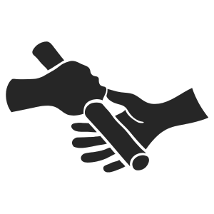

企業経営・事業運営には弁護士の活用がおすすめ
企業・事業をする際には弁護士の活用を
事業を立ち上げる際にもめ事はないから、弁護士は必要ないと考えている方がほとんどではないでしょうか。
企業の一生は、立上げ（出生）、運営（生きていくこと）、最終的に事業を他人に譲るなどしてリタイア（引退）という、人間の一生と同じようにドラマチックなものです。
弁護士はこの、企業の一生のうちのどこにでも関与できます。
弁護士は、事業主の皆様が、安心して本業に専念できるように全力でサポートするのです。
なお、弁護士前畑壮志は中小企業等経営強化法に定められた認定経営革新等支援機関ですので、企業のみなさまを強力にバックアップすることができます。
対応範囲
開業したい
会社あるいはその他の法人を作りたい
補助金やバックアップの制度があれば使いたい
人を雇いたい
労働関係を整備したい
株主総会を運営したい
議事録の作り方がわからない
法人登記をしたい
契約上のトラブル処理
下請けいじめの防止
売掛金の回収
事業承継・廃業
まずは保険内容を確認し、弁護士へご相談を
初回相談：30分 5,500円（税込）
受付時間：平日9:00〜17:00（予約制）

MBA×弁護士の経営・法律サポート
米国MBA（経営学修士）を取得した弁護士が
経営の視点から法的リスクと事業成長の両立をサポートします。
- 米国MBA×弁護士ならではの“経営視点”でアドバイス
- 企業法務・経営戦略・法的リスクのワンストップ支援
- 日米双方のビジネス法務に精通した顧問契約
- スタートアップ・中小企業から大企業まで幅広く対応